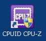

| TOP | weblog | TIPS | Works | リンク |
| 2013-02-27 CPUの情報を表示する便利なツール パソコンのCPUやメモリ、マザーボードを事細かに表示してくれる便利なツール「CPU-Z」です。 インストーラーの直リンクは「ここ」です。 ウェブサイトは、「 http://www.cpuid.com/softwares/cpu-z.html 」です。 適当なフォルダにダウンロードしてインストールしてください。 インストール時の注意注意 以下のダイアログは「Ask Toolbar」をインストールするかの問い合わせですのチェックボックスを外してください。 インストールするとディスクトップにアイコンが表れますので起動してみてください。 ハードウェアとの相性があるソフトらしく、フリーズして起動しない場合があります。 僕のlenovo ThinkPad ではフリーズして起動できませんでした。  CPU NameでCPUの詳細がIntelのウェブサイトで見ることが出来ます。 Intel Core i3 3220 http://ark.intel.com/ja/products/65693 Caches - 解説書略 Mainbord メーカー名から製品名、リビジョン（Rev）まで表示されるのはうれしい。 今まではカバーを開けなければ見れなかった。 Memory TypeとSizeに注目。 １６３８４÷１０２４＝１６（GB） SPD Max Bandwidth でメモリの規格が表示されます。 Googleで「PC3-12800とは」で調べると「DDR3-1600」であることがわかります。 C3-12800はメモリモジュールの規格で、最大データ転送速度が12.8GB/sであることを示しています。 DDR3-1600は対応するメモリチップの規格で、800MHzの倍データレート駆動(DDR)に対応可能であることを示しています。 CPUとチップセットによって利用できるメモリ規格が決まっています。 最速のメモリを使いたい場合はCPUとチップセットの仕様を両方確認しなければいけません。 Graphocs グラフィックボードが装着されていれば以下の情報が得られます。 このマシンはプロセッサー・グラフィックス（すなわちグラボなし）を使っているので以下の情報のみとなります。 |